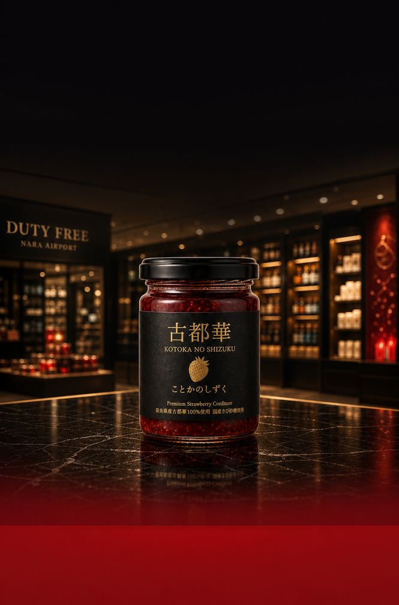
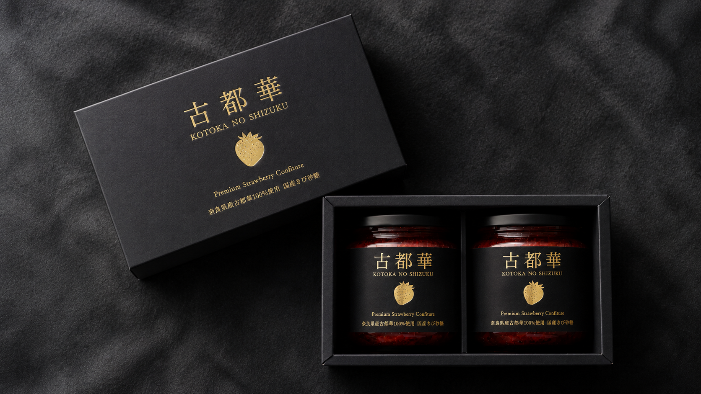

Selection began選抜の始まり
A long development process began with seeds for a new Nara strawberry.奈良の新しいいちごを目指し、長い選抜が始まりました。

Nara Duty-Free Gift
A premium Kotoka confiture from Nara.奈良の古都華を、一年中。

01 / NARA
About Nara
Nara is known for ancient temples, historic scenery, and food culture that has been passed down over many generations. A gift from Nara can carry more than taste; it can carry a sense of place. 奈良は、古い寺社や歴史ある景色が残る土地です。食文化の背景もあり、奈良で選ぶ食品ギフトには、味だけでなく土地の印象も添えられます。
Kotoka no Shizuku is made with Kotoka, a strawberry variety developed in Nara. It is designed as a food gift for travel, department stores, and duty-free settings. 古都華のしずくは、奈良県で育成されたブランドいちご「古都華」を使ったコンフィチュールです。旅先の手土産にも、百貨店・免税店ギフトにも選びやすい商品を目指しています。
02 / KOTOKA
Kotoka was registered as a variety in 2011. Its background goes back to 1989, when selection for a new Nara strawberry began. From thousands of candidates, the fruit was chosen for flavor, color, and aroma. 古都華は、2011年に品種登録された奈良生まれのいちごです。1989年から始まった選抜の中で、味、色、香りを確認しながら選ばれてきました。
A long development process began with seeds for a new Nara strawberry.奈良の新しいいちごを目指し、長い選抜が始まりました。
Kotoka was registered as a strawberry variety born from Nara's cultivation work.奈良県で育成され、古都華として品種登録されました。
Deep red color, gloss, sweetness, acidity, and a bright aroma give Kotoka its presence.濃い赤色、つや、甘み、酸味、香りのよさが特徴です。

03 PRODUCT

04 GIFT
05 TASTE
Product Sheet